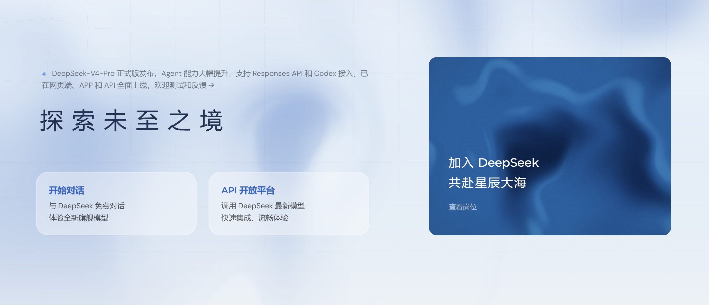
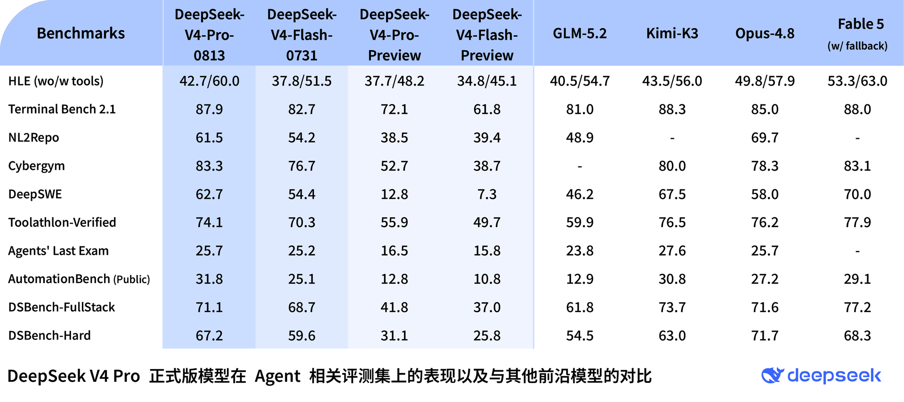
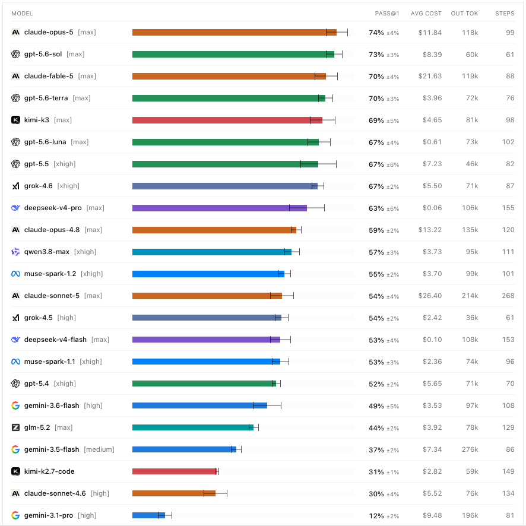
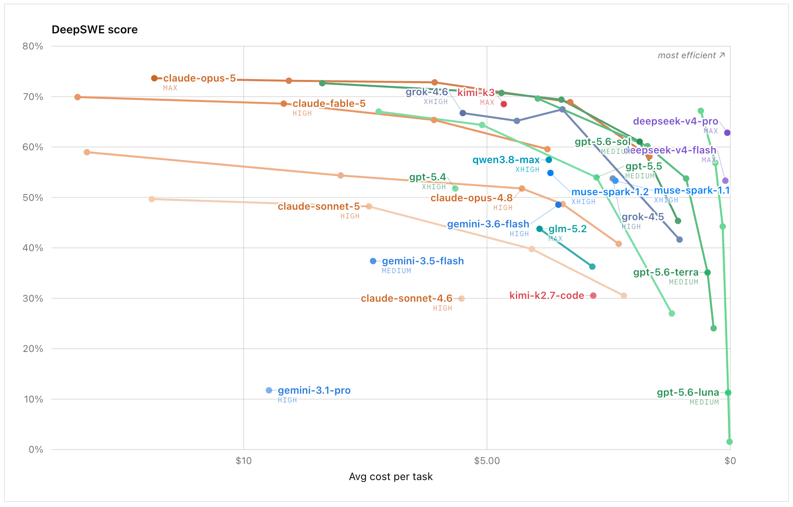
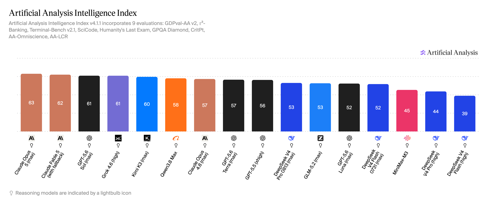
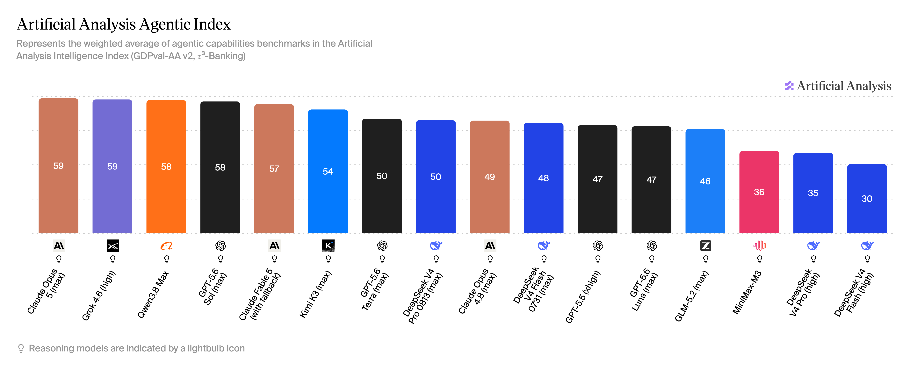

AI 行业快讯 · DeepSeek V4 Pro
DeepSeek V4 Pro 正式版全平台上线：Agent 与 Coding 能力接近顶级模型，8 月 17 日起调价
本页内容
更新日期 2026.8.13 内容来源 https://vibecoding.dreamfree.space
- V4 Pro 正式版已同步上线 APP、网页和 API，网页和 APP 可在「专家模式」中使用。
- API 模型名仍为
deepseek-v4-pro，支持 Responses API、Tool Calls、Anthropic API，并适配 Codex。 - 思考模式支持 low / high / max 三档。
- 官方评测显示，V4 Pro 相比预览版提升明显，在 Agent / Coding 多数项目上高于 Claude Opus 4.8，整体接近 Claude Fable 5。
- DeepSWE 得分 63%；当前 API 价格为缓存命中输入 0.025 元、未命中输入 3 元、输出 6 元 / 百万 tokens。8 月 17 日 0 时起改为峰谷定价，高峰时段 Pro 未命中输入 9 元、输出 27 元。
8 月 13 日，DeepSeek 在官网确认 V4 Pro 正式版上线。APP、网页端和 API 同步更新，网页和 APP 可在「专家模式」中调用，API 模型名仍为 deepseek-v4-pro。发布公告和定价页同时带来了两个变化：正式版的 Agent / Coding 评测成绩公开了，API 峰谷定价也定了下来。当前 3 元的未命中输入价格只保留到 8 月 16 日。

图片来源：DeepSeek官网13 日下午，官网首页这则公告曾短暂撤下，晚上又重新出现。结合官网新闻页，APP、网页端和 API 全面上线已经是官方确认的信息。
一、正式版更新了什么
官方给出的改动主要集中在 Agent 能力和接口支持：V4 Pro 支持 Responses API，并针对 Codex 接入做了适配。API 文档还列出了 Tool Calls、JSON Output、Anthropic API 和对话前缀续写等能力，FIM 补全目前仅支持非思考模式。
基础规格为 1M 上下文、384K 最大输出，并发限制为 500。Flash 的并发限制是 2500，Pro 更适合复杂任务，Flash 则适合高并发、低单价请求。
思考模式现在可以按任务复杂度选档：简单任务用 low，日常 Agent 用 high，高度复杂的任务用 max。官方默认开启思考模式，effort 默认为 high，V4 Pro 和 V4 Flash 都支持这三档。13 日早些时候，社区反馈 max 思考深度出现异常，随后又反馈问题已经修复。官方没有发布故障说明；需要使用 max 的任务，仍建议先用小流量确认当前行为。
社区用户还反馈，正式版的思维链比过去更精简，常常省略不影响语义的连接词和解释。这只是用户实测印象，不能据此判断模型的写作能力。
二、官方评测表：正式版比预览版提升了多少
DeepSeek 发布的对比表覆盖 HLE、Terminal Bench 2.1、NL2Repo、Cybergym、DeepSWE、Toolathlon、Agents' Last Exam、AutomationBench 和两项 DSBench。Flash-0731 一列与官方模型卡逐项相符，表内数据可以作为比较依据。官方还注明，公开基准中的 Code Agent 任务使用 DeepSeek Harness 极简模式、max 档、topp=0.95、temperature=1.0 测试，换用其他框架后结果可能略有不同。

图片来源：DeepSeek官网下表保留 V4 Pro 与几个主要对手的关键分数，完整对比见配图：
| Benchmark | V4-Pro-0813 | V4-Pro-Preview | GLM-5.2 | Kimi-K3 | Opus-4.8 | Fable 5 |
|---|---|---|---|---|---|---|
| HLE（无工具 / 有工具） | 42.7 / 60.0 | 37.7 / 48.2 | 40.5 / 54.7 | 43.5 / 56.0 | 49.8 / 57.9 | 53.3 / 63.0 |
| Terminal Bench 2.1 | 87.9 | 72.1 | 81.0 | 88.3 | 85.0 | 88.0 |
| NL2Repo | 61.5 | 38.5 | 48.9 | - | 69.7 | - |
| Cybergym | 83.3 | 52.7 | - | 80.0 | 78.3 | 83.1 |
| DeepSWE | 62.7 | 12.8 | 46.2 | 67.5 | 58.0 | 70.0 |
| Toolathlon-Verified | 74.1 | 55.9 | 59.9 | 76.5 | 76.2 | 77.9 |
| AutomationBench Public | 31.8 | 12.8 | 12.9 | 30.8 | 27.2 | 29.1 |
| DSBench-FullStack | 71.1 | 41.8 | 61.8 | 73.7 | 71.6 | 77.2 |
| DSBench-Hard | 67.2 | 31.1 | 54.5 | 63.0 | 71.7 | 68.3 |
正式版与预览版的差距
正式版相较预览版提升明显：DeepSWE 从 12.8 提升到 62.7，Terminal Bench 2.1 从 72.1 提升到 87.9，DSBench-Hard 从 31.1 提升到 67.2。Flash-0731 的 DeepSWE 是 54.4，Pro 正式版又高出 8.3 个百分点。
V4 Pro 这次升级的重点落在后训练和 Agent 工作流，长周期代码任务、终端操作、工具调用和企业自动化的分数都明显提高。
V4 Pro 与 Fable 5 仍有差距
V4 Pro 在 Terminal Bench 2.1 上是 87.9，Fable 5 是 88.0，几乎持平；Cybergym 上 V4 Pro 为 83.3，反而高于 Fable 5 的 83.1；AutomationBench Public 也以 31.8 高于 Fable 5 的 29.1。
但在 DeepSWE、Toolathlon 和 DSBench-FullStack 上，V4 Pro 分别为 62.7、74.1 和 71.1，Fable 5 则是 70.0、77.9 和 77.2。V4 Pro 已经接近 Fable 5，在少数 Agent 评测上反超，但整体仍有差距。
V4 Pro 在 Agent / Coding 评测中多数领先 Opus 4.8
V4 Pro 在 Terminal Bench、Cybergym、DeepSWE 和 AutomationBench 上高于 Opus 4.8，DSBench-FullStack 71.1 与 Opus 4.8 的 71.6 基本持平。HLE 的有工具成绩则是 V4 Pro 60.0 高于 Opus 4.8 的 57.9。
HLE 无工具、NL2Repo、Toolathlon 和 DSBench-Hard 上，Opus 4.8 仍然更高；Agents' Last Exam 两者同为 25.7。综合这些项目，V4 Pro 在 Agent / Coding 评测上多数领先 Opus 4.8，但在知识推理和部分工程任务上仍有差距。
V4 Pro 与 Kimi K3 接近，领先 GLM-5.2
Kimi K3 在 DeepSWE、Toolathlon、Agents' Last Exam 和 DSBench-FullStack 上高于 V4 Pro，但 V4 Pro 在 Cybergym、AutomationBench 和 DSBench-Hard 上领先，Terminal Bench 也只差 0.4 分。两者分数接近，Kimi K3 整体略高。
与 Kimi K3 的差距不同，V4 Pro 在除 Cybergym 外的各项对比中都高于 GLM-5.2。Artificial Analysis 的 Intelligence Index 中两者同为 53，综合智能分数与 Agent 评测并不完全一致。
三、DeepSWE：更接近实际 Coding Agent 任务
DeepSWE 更接近 Cursor、Codex 这类工具的实际用法：给模型一个目标，让它在真实仓库里翻代码、改文件、跑验证，遇到问题再继续修改，多步完成一项工作。
DeepSWE 由 Datacurve 维护，测试长周期软件工程任务。当前 v1.1 有 113 个任务、91 个仓库和 5 种语言，所有模型统一使用 mini-swe-agent。任务全部从零开始，不从现成 commit / PR 改编；验证器由人工编写，检查任务行为是否正确，不要求实现方式与参考答案一致。相比短题榜或固定仓库修补任务，DeepSWE 的 prompt 约为 SWE-bench Pro 的一半长，但解决方案代码量是后者的 5.5 倍，输出 token 约 2 倍，更接近 Agent 在项目中连续写代码的场景。

图片来源：DeepSWE在榜单的 max 配置下，V4 Pro 的 Pass@1 为 63%±6%，排在第 9 位，高于 Opus 4.8 的 59%±2%，低于 Fable 5 的 70%±4%、Kimi K3 的 69%±5% 和 Grok 4.6 的 67%±2%。官方对比表中的 DeepSWE 分数为 62.7，与榜单的 63%接近。V4 Pro 已经超过 Opus 4.8，但还没有追上 Fable 5 和 Kimi K3。
| 模型 | DeepSWE Pass@1 | DeepSWE 平均成本 / 任务 |
|---|---|---|
| Claude Fable 5 | 70%±4% | \$21.63 |
| Kimi K3 | 69%±5% | \$4.65 |
| Claude Opus 4.8 | 59%±2% | \$13.22 |
| DeepSeek V4 Pro 0813 | 63%±6% | \$0.06 |
| DeepSeek V4 Flash 0731 | 53%±4% | \$0.10 |
| GLM-5.2 | 44%±2% | \$3.92 |

图片来源：DeepSWE图的纵轴是 DeepSWE 分数，越高越好；横轴是每任务平均成本，而且刻度是反的：左边更贵，右边更便宜，最右侧接近 0。右上角标注了 most efficient，越靠上、越靠右越好。Claude Opus 5、Fable 5 的分数更高，但都落在左侧高价区；Kimi K3、Grok 4.6 位于中间。DeepSeek 的两个点明显贴近右侧：V4 Pro 每任务平均成本 \$0.06，全榜最低，Flash 是 \$0.10。V4 Pro 的分数不是榜首，63%也低于 Fable 5 的 70%，但它用接近 60%的完成率，换来了远低于其他高分模型的任务成本。这里的成本采用榜单评测口径，不能直接当成 8 月 17 日涨价后的 API 账单。
四、Artificial Analysis：综合智能与 Agent 能力分开看
Intelligence Index 看综合能力，Agentic Index 看 Agent 任务，两个分数对应不同维度。V4 Pro 0813 在 Intelligence Index 中与 GLM-5.2 并列，在 Agentic Index 中略高于 Opus 4.8、V4 Flash-0731 和 GLM-5.2。
| 模型 | Intelligence Index | Agentic Index |
|---|---|---|
| Claude Fable 5 | 62 | 57 |
| Kimi K3 | 60 | 54 |
| Claude Opus 4.8 | 57 | 49 |
| DeepSeek V4 Pro 0813 | 53 | 50 |
| DeepSeek V4 Flash 0731 | 52 | 48 |
| GLM-5.2 | 53 | 46 |
两项分数放在一起看，V4 Pro 的优势主要落在 Agent 任务，而不是综合能力榜首。

图片来源：Artificial Analysis Intelligence Index在 Artificial Analysis Intelligence Index v4.1.1 中，V4 Pro 0813 得分 53，与 GLM-5.2 并列，低于 Fable 5 的 62、Opus 5 的 63 和 Kimi K3 的 60，高于 V4 Pro 预览版的 44。和预览版相比，正式版的综合能力提升明显。

图片来源：Artificial Analysis Agentic IndexAgentic Index 中，V4 Pro 0813 得分 50，高于 Opus 4.8 的 49、V4 Flash-0731 的 48 和 GLM-5.2 的 46，低于 Fable 5 的 57 和 Kimi K3 的 54。这个分数更能对应 V4 Pro 的使用场景：Agent、工具调用和长周期 Coding 任务。
五、价格：8 月 17 日起进入峰谷定价
当前官方 API 定价如下，单位是每百万 tokens，有效期到北京时间 8 月 17 日 0 时之前：
| 项目 | deepseek-v4-pro | deepseek-v4-flash |
|---|---|---|
| 缓存命中输入 | 0.025 元 | 0.02 元 |
| 缓存未命中输入 | 3 元 | 1 元 |
| 输出 | 6 元 | 2 元 |
| 上下文长度 | 1M | 1M |
| 最大输出 | 384K | 384K |
| 并发限制 | 500 | 2500 |
8 月 17 日 0 时起，DeepSeek 对 V4 全系列实行峰谷定价。高峰时段是北京时间 9:00–12:00、14:00–18:00，其余为空闲时段；闲时价格是高峰的一半。
| 模型 | 时段 | 缓存命中输入 | 缓存未命中输入 | 输出 |
|---|---|---|---|---|
| deepseek-v4-pro | 闲时 | 0.15 元 | 4.5 元 | 13.5 元 |
| deepseek-v4-pro | 高峰 | 0.30 元 | 9.0 元 | 27.0 元 |
| deepseek-v4-flash | 闲时 | 0.05 元 | 1.5 元 | 4.5 元 |
| deepseek-v4-flash | 高峰 | 0.10 元 | 3.0 元 | 9.0 元 |
闲时价格并不会回到当前水平。Pro 未命中输入将从 3 元涨到闲时 4.5 元、高峰 9 元；输出从 6 元涨到闲时 13.5 元、高峰 27 元。Flash 也会一起上调：未命中输入从 1 元涨到闲时 1.5 元、高峰 3 元，输出从 2 元涨到闲时 4.5 元、高峰 9 元。
对 Agent 请求，输入通常占大头；如果 95% 的输入命中缓存，按 1% 输出、99% 输入、输入侧 95% 缓存命中 折算，每百万 tokens 的综合价如下：
| 模型 | 当前 | 8 月 17 日起闲时 | 8 月 17 日起高峰 |
|---|---|---|---|
| deepseek-v4-pro | 0.23 元 | 0.50 元 | 1.00 元 |
| deepseek-v4-flash | 0.09 元 | 0.17 元 | 0.33 元 |
按这个用量结构，Pro 综合价约为当前的 2.2 倍（闲时）和 4.3 倍（高峰），Flash 约为 1.9 倍和 3.8 倍。综合价上涨的主要原因是缓存命中价格从 0.025 元提高到 0.15 / 0.30 元；在这个假设中，约 94% 的 token 都走缓存命中，输出只占 1%。
V4 Pro 当前的标价仍是 Flash 的 3 倍，并发只有 Flash 的五分之一。高频、低复杂度请求继续交给 Flash 更合适；需要复杂规划、长链路执行和高质量代码修改的任务，再考虑使用 Pro。涨价后，能错峰的 Agent 任务尽量放在闲时。
六、要不要用
日常 vibe coding、在 Codex 或 Responses API 中运行长链路 Agent，V4 Pro 值得优先测试。DeepSWE 已经高于 Opus 4.8，整体接近 Fable 5；按当前假设计算，每百万 tokens 综合价约 0.23 元，8 月 16 日前完成迁移和压测成本最低。并发不超过 500、任务以修改代码仓库为主时，Pro 更合适。
如果请求量大、需要接近 2500 并发，或者任务本身不需要 Pro 的完成率，Flash 更合适。它的 DeepSWE 分数低一截，但综合价约 0.09 元，涨价后闲时约 0.17 元，仍然便宜不少。
如果最看重单项上限和知识推理的稳定性，Fable 5、Opus 4.8 仍然更稳。V4 Pro 在 Agent / Coding 上接近它们，但没有每项都追上。
8 月 17 日之后，可以排队的任务放到闲时，Pro 综合价约 0.50 元，是高峰 1.00 元的一半。高峰必须使用 Pro 时，可以先用 high 档思考，避免所有任务都以 max 档运行。
七、总结
DeepSeek V4 Pro 正式版已经进入 Coding Agent 第一梯队，APP、网页端和 API 也已同步上线。公开数据中，V4 Pro 尚未全面超过 Fable 5；与 Opus 4.8 的比较也有胜有负，但它在 Terminal Bench、Cybergym、DeepSWE、AutomationBench 等 Agent / Coding 任务上占据优势，DeepSWE 单项和榜单都高于 Opus 4.8。
价格仍是 V4 Pro 的重要优势：按高缓存命中计算，当前每百万 tokens 综合价约 0.23 元。8 月 17 日 0 时起，同样口径下高峰综合价约 1.00 元。需要 Coding Agent 能力、又要控制成本的，可以在调价前完成测试；追求高并发和低成本的，Flash 仍然更合适，只是它也会同步涨价。
数据来源 https://vibecoding.dreamfree.space
相关体验 DeepSeek 路线对比与使用入口